全部主題
So much for Gemini 3.5 Pro.
Meta launched a new Muse AI agent it claims can help you with everything from firing off emails to buying stuff online. Muse can be surprisingly effective at delivering on those promises — if you’re willing to trust Meta with your data and hand Muse your credit card. Since the la
美國總統川普（Donald Trump）周二（9/29）簽署行政命令，正式要求美國行政部門以「超級智慧」（Super Intelligence，SI）取代「人工智慧」（Artificial Intelligence，AI），未來政府機構的官方文件、公開溝通、網站、報告及政策文件，都應改用SI一詞。
Nvidia於9月28日推出Open Agent Safety Platform，透過開源軟體OpenShell，與基於BlueField-4資料處理器（DPU）的參考系統設計Sentry，從軟體執行環境延伸至硬體層，為AI代理建立安全邊界及監控機制。Nvidia表示，目前已有超過100家廠商支援或參與相關技術，涵蓋AI、資安、企業軟體、運算基礎架構及機器人等領域。
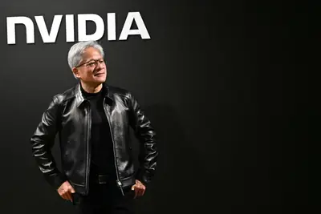
OpenAI makes others suffer "the harms of its unsafe decision-making," nonprofit says.
OpenAI於DevDay發表全天候AI代理Dots，能主動處理背景工作；並推出月費500美元Pro方案，既有200美元方案用量則砍半。
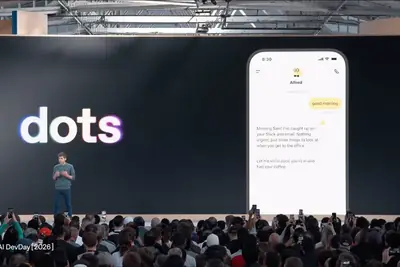
人工智慧會否消滅工作，一直是科技界和勞動市場關注的議題。史丹佛大學 Bharat Chandar 與倫敦國王學 […]
隨著全球人工智慧（AI）產業加速轉向代理人（Agentic）工作，資料中心對高效能CPU的需求急劇暴增。根據最 […]
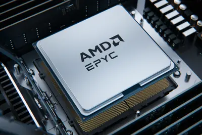
近期市場再度傳出，聯發科的Google TPU訂單能否準時放量又出現懸念，對此聯發科已鄭重「對外否認」相關傳言，並強調目前TPU並沒有掉單情事。
隨著中國持續推進自研AI算力晶片布局，華為、寒武紀與阿里巴巴等中系業者ASIC加速器開始逐步放量，並交由長電科技、通富微電、盛合晶微等進行封裝，帶動中國當地OSA...
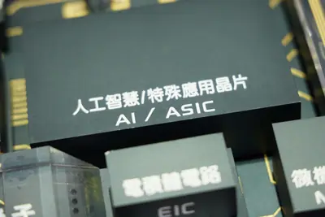
AI晶片封裝持續放大，玻璃基板的「尺寸戰」浮上檯面，值得注意的是，全球四大玻璃廠的核心基板不約而同選擇510×515mm這個尺寸，從康寧（Corning）、艾杰旭（A...
資訊系統整合解決方案業者藍新資訊將於10月下旬掛牌上櫃。過去公司以大型核心系統主機為主要業務，近年將服務延伸至AI GPU運算平台、AI基礎架構等，2026上半年AI相...
過去一年來，NVIDIA持續觀察AI代理偏離既定程序的情況。例如，AI代理將讀取權限悄悄升級為寫入權限、向未經授權的端點發送請求，或點擊未經授權的驗證碼繞過鏈接。<b...
超微（AMD）約82億美元全股票交易收購World Labs，交割後World Labs將作為前瞻大型語言模型（LLM）研究組織保留，創辦人李飛飛則正式出任超微執行副總裁兼首席科...
IT之家 10 月 1 日消息，根据市场调查机构 Sensor Tower 公布数据， Meta 的 AI 助手 Muse 上线约三周，下载量突破 500 万次 ，成为美国 App Store 免费榜榜首，并连续 12 天保持榜首位置。 Sensor Tower 高级洞察分析师 Kara Lee 预测 Muse 下载量在 9 月 30 日（耗时 22 天）突破 500 万次，达到这一规模所用时间明显短于 ChatGPT（56 天）、Grok（103 天）与 Claude（492 天）。IT之家附上相关图表如下： Sensor Tower 统计显示，美国市
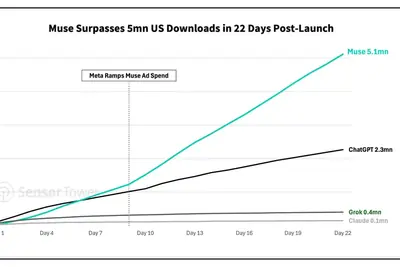
IT之家 10 月 1 日消息，科技媒体 MacRumors 昨日（9 月 30 日）发布博文，进一步补充关于苹果 iPad mini 8 的更多细节信息，除了 A20 Pro 芯片外，还将首次引入 IP 等级防水等。 发布日期方面，该媒体认为苹果可能会在 2026 年 10 月发布该产品。售价方面，现款 iPad Mini 在美国起售价为 599 美元 （IT之家注：现汇率约合 4,024 元人民币） ，6 月因内存与存储芯片涨价上调 100 美元 （现汇率约合 671.8 元人民币） 。苹果 iPad mini 8 采用更昂贵的 OLED 屏，价格恐
匿名開發者製作的 AI 模型「Space Bunny」，上線 6 天就成了開源程式碼代理 OpenCode 上 […]
受惠於全球人工智慧（AI）基礎設施建設帶來的歷史性記憶體需求，美國記憶體大廠美光科技（Micron Techn […]
IT之家 10 月 1 日消息，谷歌昨日（9 月 30 日）发布 Gemini 4 Argon， 称其为公司迄今最先进的 AI 模型，但目前并未面向公众全面开放。 定位方面，Gemini 4 Argon 是谷歌当前“最先进”模型，重点是长流程软件工程、企业知识工作和网络安全防御。官方称其在真实世界软件工程测试创纪录，网络安全基准并列第一，并在金融、法律等专业任务基准领先。 模型特性方面，Gemini 4 Argon 单次输出上限达到约 100 万 tokens，高于此前的 64,000 tokens，适合处理大型代码库、长文档和多阶段任务。 谷歌 Dee
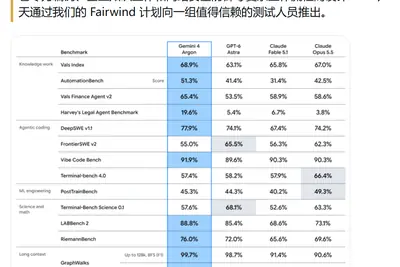
在製造現場，品質檢測一直是自動化最難處理的環節之一。當產線運轉速度越快，留給相機擷取影像、算力進行分析與判定瑕疵的時間就被壓縮得越短，若遇上紙巾、包裝材料等容易伸縮、褶皺或移位的柔軟材質，產品外觀本身的變化甚至可能被誤判為瑕疵。若瑕疵藏在產品內部，傳統光學檢測更難直接辨識。 近年來，工業級 AI 視覺技術的普及正徹底翻轉傳統自動光學檢測（AOI）的局限。寶潔（P&G）與西門子（Siemens）聯手打造的「視覺檢測駕駛艙」（Visual Inspection Cockpit，VIC），成功將深度學習導入極速運轉的日用消費品產線；三星 SDI 則將 AI 深
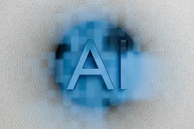
【科技早餐】今天精選 7 則國內外重要科技新聞。 ＊OpenAI 傳募資至少 300 億美元，Anthropic 招股文件示警 AI 災難性風險 OpenAI 傳尋求至少 300 億美元新資金，Anthropic IPO 文件則揭露高速成長、巨額虧損與先進 AI 的安全風險。《彭博》引述知情人士報導，OpenAI 正尋求募資至少 300 億美元，目標估值約 1.4 兆美元，不包含這次募資的新資金。協商仍在初期，條件可能改變。OpenAI 執行長 Sam Altman 也在開發者大會表示，公司將優先處理安全問題，在能有把握做出安全決策之前，不會上市。另一方
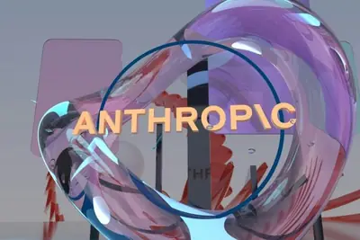
Flow Engineering, which is bringing AI agents to hardware design, also landed Roelof Botha as an angel investor and board member.
Six major AI companies signed a voluntary agreement with the White House this week vowing to implement safeguards. It’s unclear how much that matters.
AI is far from a perfect resource. But it seems to hallucinate less than Kennedy.
OpenAI's "Decisions API" is a Jev clone that confirms the importance of fast, cheap intelligence.
In her new book on biological warfare, Annie Jacobsen didn’t even discuss AI because scientists can already warp Mother Nature to create extinction-level events.
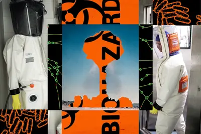
Trump gets dozens of AI firms to agree to voluntary safety tests.
While AI has made plenty of inroads on people's phones and computers, it's largely failed in dedicated devices. But over the next year, two major AI companies, Meta and OpenAI, will attempt to change that. And they're apparently betting on a similar path: testing appetites for ph
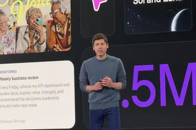
One of the more secure Linux distributions has added another feature to help further lock it down.
Reddit is ending support for RSS feeds, as the company continues tightening access to its trove of user-generated content.
Hey HN, Anders and Tom here. We're building Magnitude, an inference engine for agents that optimizes itself to run as fast as possible on your hardware. It works on Mac, Linux, and Windows on any hardware and is up to 2x faster than llama.cpp. We're both software engineers and pr
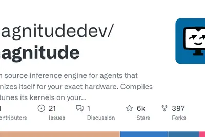
There’s a reason frontier labs have gotten gun-shy about consumer AI — and it’s not because the tech isn’t good enough.
After hosting a meal with Big Tech leaders on Tuesday, President Donald Trump responded to journalist questions about his artificial intelligence announcements in typical fashion. He said his previous claims regarding fears around AI safety being a "hoax" cooked up by Democrats n
Bringing together the world’s brightest minds and the latest accelerated computing technology leads to powerful breakthroughs that help tackle some of the biggest research problems. To foster such innovation, the NVIDIA Graduate Fellowship Program provides grants, mentors and tec
Many sites see just one-tenth of one percent of their advertising revenue from AI payments.
By launching an AI agent for food ordering, DoorDash is looking to gain an edge over rivals Uber Eats and Grubhub.
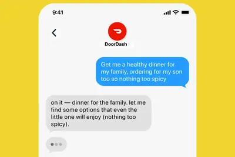
"One of the biggest reasons we are winning against robotics companies is because we are not a robotics company."
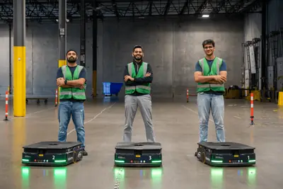
Instinct is rolling out human-curated product and travel recommendations, but some users aren’t happy about getting suggestions they never asked for.
Intended to help with biosecurity, it works with a popular AI protein design tool.
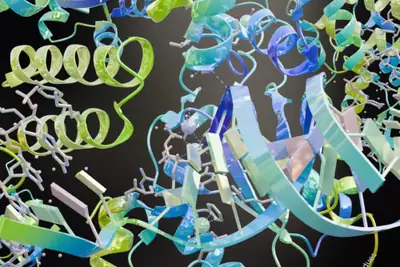